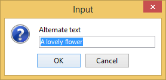

Presenting an Edit Properties Dialog Box for Actions in Author Mode
The EditPropertiesHandler extension point allows you to present a specialized dialog box when the action of double-clicking an element tag is intercepted in Author mode. For example, you could use it to present a dialog box that allows the user to editing the properties of an image.
How to Implement an EditPropertiesHandler
- Implement the ro.sync.ecss.extensions.api.EditPropertiesHandler interface.
- To instruct Oxygen XML Editor to use this newly created implementation, use
either of the following methods:
- If you have configured an extensions bundle, you can return the EditPropertiesHandler implementation using the ro.sync.ecss.extensions.api.ExtensionsBundle.createEditPropertiesHandler() method.
- Specify the EditPropertiesHandler in the Author edit properties handler individual extension in the Extensions tab of the Document Type configuration dialog box for your particular document type.
Example
The following example illustrates an implementation for presenting a simple properties
editing dialog box when a user double-clicks an <image> tag in
Author mode (with tags displayed from the  Tags display mode
drop-down menu):
Tags display mode
drop-down menu):
public class CustomEditPropertiesHandler implements EditPropertiesHandler {
/**
* @see ro.sync.ecss.extensions.api.Extension#getDescription()
*/
@Override
public String getDescription() {
return "Sample implementation that handles properties for a table element.";
}
/**
* @see ro.sync.ecss.extensions.api.EditPropertiesHandler#canEditProperties
(ro.sync.ecss.extensions.api.node.AuthorNode)
*/
@Override
public boolean canEditProperties(AuthorNode authorNode) {
// If this node is an image element we can edit its properties.
return "image".equals(authorNode.getDisplayName());
}
/**
* @see ro.sync.ecss.extensions.api.EditPropertiesHandler#editProperties
(ro.sync.ecss.extensions.api.node.AuthorNode,
ro.sync.ecss.extensions.api.AuthorAccess)
*/
@Override
public void editProperties(AuthorNode authorNode, AuthorAccess authorAccess) {
// If we receive this call then it surely an image.
AuthorElement imageElement = (AuthorElement) authorNode;
String currentValue = "";
AttrValue altValue = imageElement.getAttribute("alt");
if (altValue != null) {
currentValue = altValue.getValue();
}
String newValue = JOptionPane.showInputDialog(
(Component) authorAccess.getWorkspaceAccess().getParentFrame(),
"Alternate text",
currentValue);
if (newValue != null) {
authorAccess.getDocumentController().setAttribute
("alt", new AttrValue(newValue), imageElement);
}
}
}
Example result: If a user were to double-click an <image> tag icon
() in Author mode, the
following dialog box would be displayed that allows the user to edit the alternate
text property for the image:
